Bluffs
Fixed primary camera · matched capture size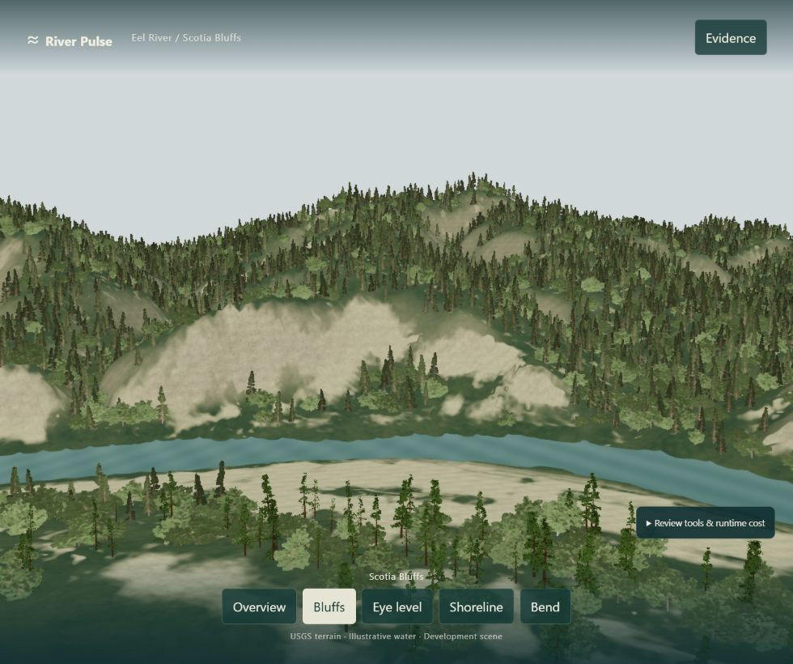
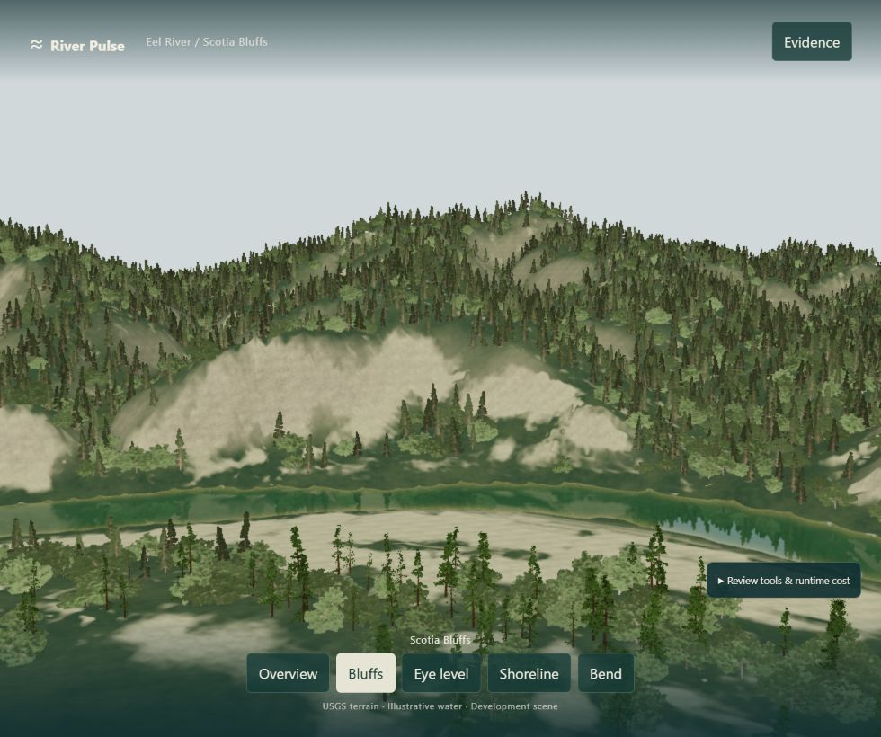
Compare the previous Eel surface with an experimental pass reusing Hacienda's authored water optics on the same three fixed cameras.


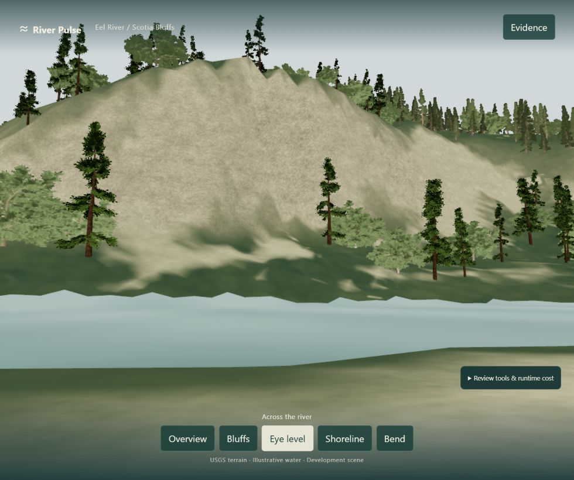
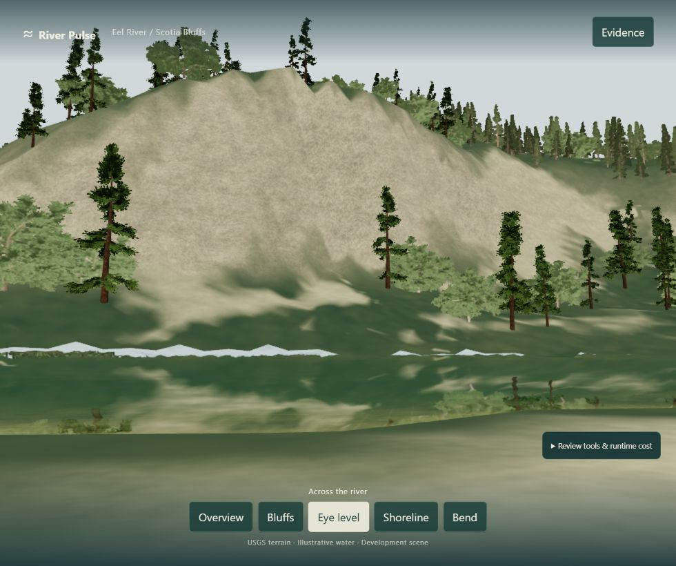
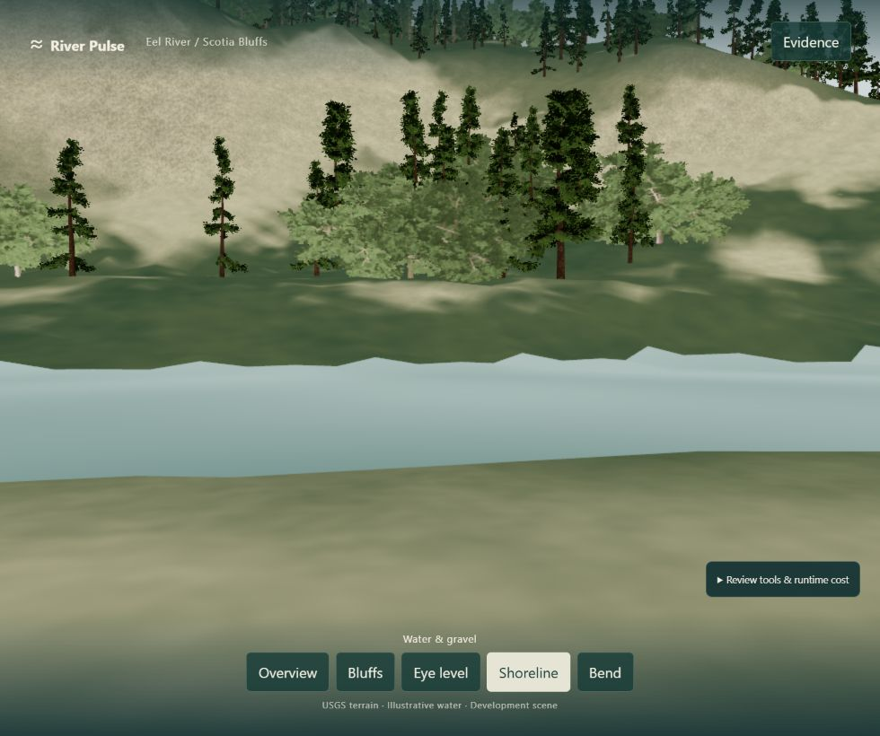
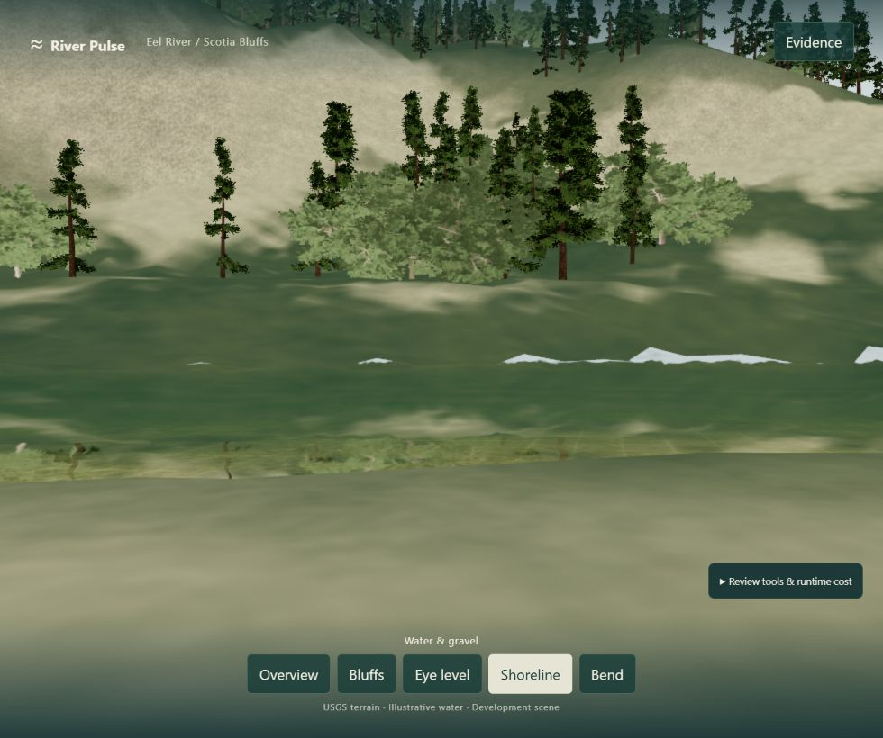
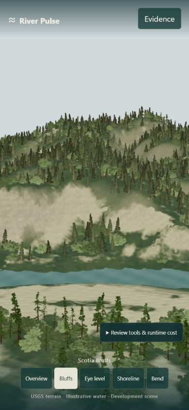
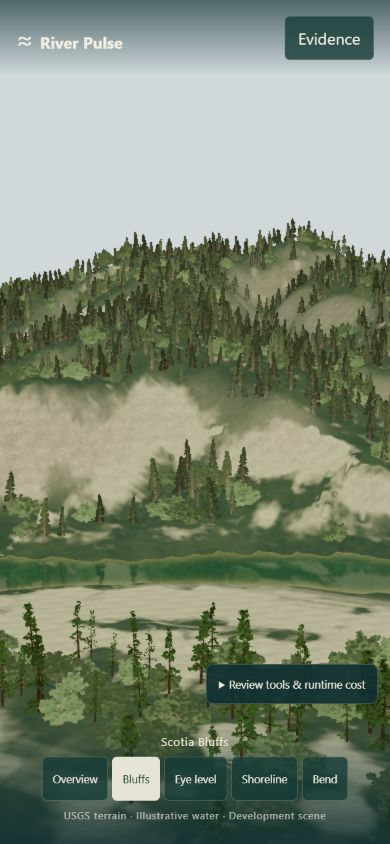
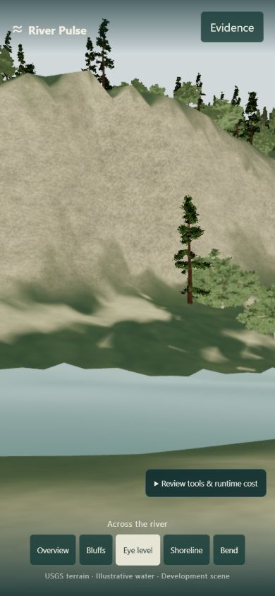
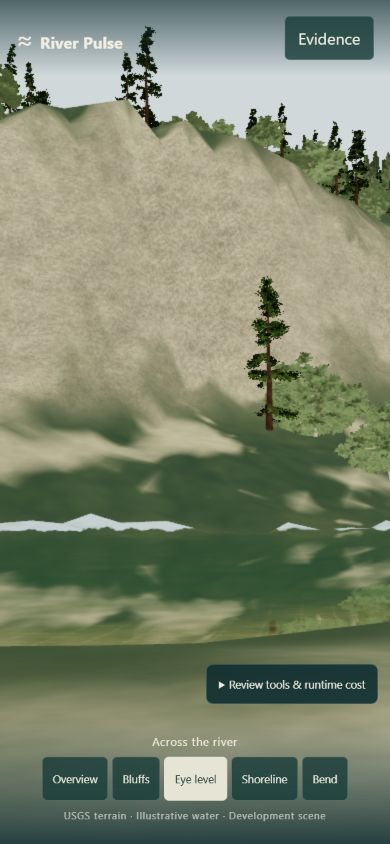
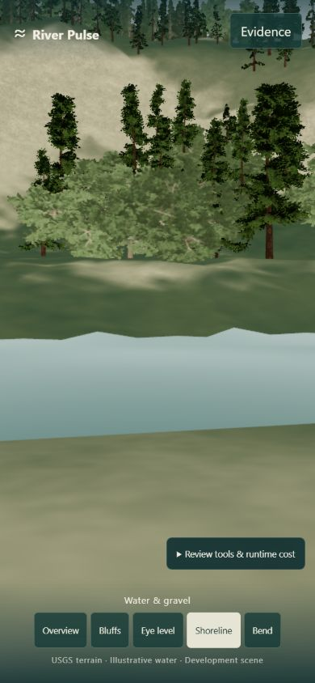
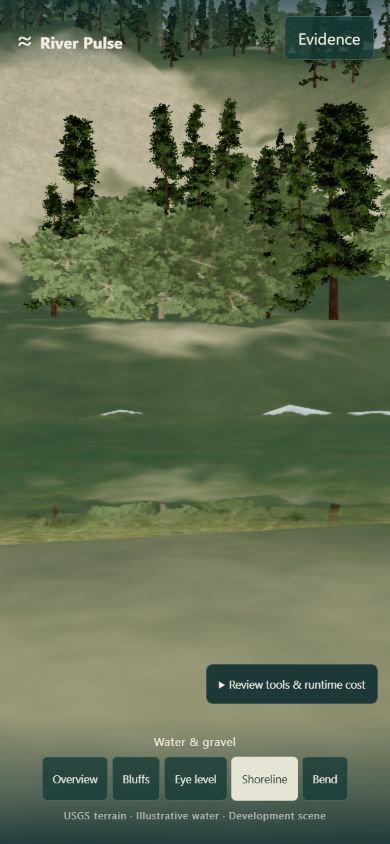
The experimental pass uses an illustrative optical-depth adapter and modeled bed. Its reflection uses one plane, so it cannot represent the existing nonplanar Eel surface everywhere. Review notes report that filtering the procedural bed reduces speckling and forest reflection improves the main view; close views still show a bright angular far bank and distorted reflection, below standard. The height-driven shoreline test was rejected: fading flattened water lost the forest reflection and did not remove the bright band. A separate no-glint test also failed to remove the band; both tests were reverted. Color, clarity, depth and highlights remain visual choices, not measured water quality, bathymetry, stage or flow.
Matched desktop primary captures, 980×820 WebGPU: both passes resident in the same runtime, previous and experimental each report 18.03 MiB geometry. The pre-integration geometry baseline was 17.94 MiB; the experimental depth attribute accounts for the +0.091 MiB. Previous surface: 1,261,548 triangles and 8 draw calls. Experimental optics: 2,514,254 triangles and 14 calls. Eight source textures have an estimated 55 MiB RGBA/mip footprint. The 637×533 reflection target is estimated at 2.59 MiB for color only; depth and driver allocation are excluded, and the target remains resident after first use.
Captured frame interval p50/p95 was 44.28/71.12 ms before and 58.13/76.40 ms after. CPU render submission p50/p95 was 0.50/0.81 ms before and 0.57/0.81 ms after. Automated frame intervals are not FPS and do not isolate GPU time. GPU time, reflection allocation and total browser memory remain unmeasured. This comparison is pending human review, not a performance acceptance result.